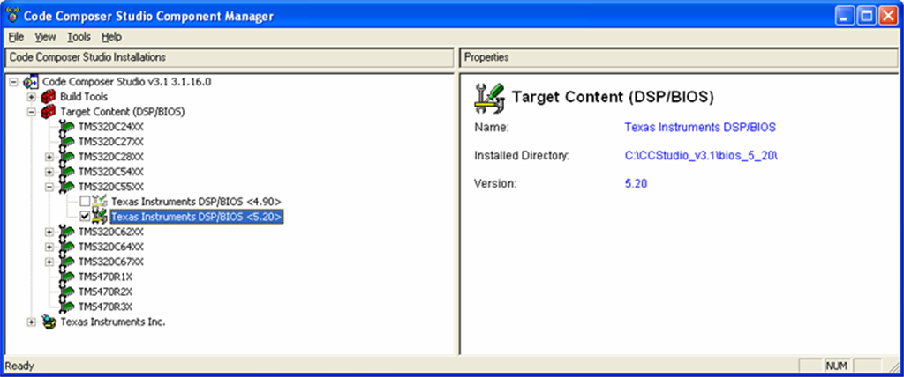

This version of DSP/BIOS is delivered independent of Code
Composer Studio (CCStudio). It is available for Linux, Solaris, and Microsoft Windows.
It includes support for all DSP families supported by DSP/BIOS: C28x,
C55x, and C6x.
Quick Start: If you want to quickly try
DSP/BIOS with command-line/makefile builds (and not use Code Composer Studio),
follow the steps in the Installing
DSP/BIOS, Setting System Variables, and the
Building
Examples from the Command Line sections.
IMPORTANT:
For the latest information about what’s new in this
release and any known issues, see the release
notes (which, in turn, has links to the release notes of the sub-components
that make up the DSP/BIOS product).
This document describes how to perform the following
tasks:
To install this version of
DSP/BIOS, follow these steps:
1. Copy
or download the distribution
file for your operating system to a temporary location. There is a
different
distribution file for Linux and Windows; make sure to install the
proper one. The Linux distribution can be installed either via the GUI
or the command line ("--mode console" option).
The Windows distribution install is supported only via the GUI.
2. Choose an install directory
anywhere on your system; if Windows it is recommended to be at the top of a CCS
3.3
(or higher) installation (e.g.
C:\CCStudio_v3.3). The directory must not have any spaces in its path.
Make sure
you have at least 400 MB of space available.
The rest of this document uses <install_dir>
to refer to the location you choose. Most examples in this document are for
Windows.
3. Run the self-extracting
installation file you downloaded. For command-line installations, use the
–-mode flag on the command line. For example:
./bios_setuplinux_5_41_00_06.bin --mode console
4. During the installation, accept the End User License Agreement, and specify the directory you chose above as the destination directory.
5. For Windows Installations, if CCS 3.3 is already installed, then during the BIOS 5.41 installation a utility runs that updates the CCS version of TConfCmdObject.ocx (a hidden plugin responsible for Tconf integration and updating from 4.90 to 5.41). If BIOS 5.41 is installed prior to CCS 3.3, then the BIOS 5.41 UpdateTConfCmdObject.exe utility needs to be run manually after CCS 3.3 is installed. To do this, open a command window, change to the <install_dir>/packages/ti/bios/bti/bin directory, and type "UpdateTconfCmdObject -f".
If you ever need to uninstall
DSP/BIOS, an uninstaller is provided for Windows (e.g. Control Panel ->
Add/Remove Programs). For Linux, go to the <install_dir> and remove all the files with the “rm –rf <install_dir>/bios_5_41_00_06” command or run <install_dir>/bios_5_41_00_06/uninstall.bin.
To setup this version of DSP/BIOS, these steps
must be followed:
1. Create the BIOS_INSTALL_DIR system environment variable, and set it to <install_dir>/bios_5_41_00_06.
On
Windows the environment variable is set by the installer. For Linux you must set it manually.
2. If building outside of CCS, Insert the following location at the beginning of your PATH system environment variable. (Remove any that were put in for a DSP/BIOS 5.10 or 5.20 installation.)
For Windows use back slashes (“\”):
%BIOS_INSTALL_DIR%\xdctools
(Windows requires a semicolon ; between each system environment variable you add to the PATH)
For Linux use forward slashes (“/”):
If you are using bash on Linux, change the PATH with the following command:
export PATH=$BIOS_INSTALL_DIR/xdctools:$PATH
If you are using csh on Solaris,
change the PATH with the following command:
Set PATH =($BIOS_INSTALL_DIR/xdctools $PATH)
In order to correctly build and
communicate via Run-Time Analysis (RTA) with a DSP/BIOS application, CCStudio
needs to be configured with the version of the tools and DLLs that matches the
DSP/BIOS version of the applications.
This is setup via the
BIOS Selector.
If you are using Linux/Solaris,
you can copy applications you have built to a Windows system with CCStudio for
debugging.
For CCStudio 3.3 or higher, you
can choose which version of DSP/BIOS to use with CCStudio. This choice is on a
per DSP family basis. To do this, follow these steps:
1. Open
the Component Manager, by choosing Help->About
in CCStudio and clicking the Component Manager button. You can also open the
Component Manger from the Start->Programs->
2. Expand the Target Content (DSP/BIOS) folder to see a list of targets. For your
target platform, expand the list to see the available DSP/BIOS versions. Put a
checkmark next to the version of DSP/BIOS you want to use. Information about
the selected version of DSP/BIOS is shown to the right.

3. You may see a message that says
the combination you have selected is untested. This message is informational
only, and does not necessarily indicate that the combination will not work
correctly.
4. Save your change and exit from the
Component Manager. Then, restart CCStudio.
IMPORTANT:
The hello example comes with all
the files generated for a number of platforms. You can run the example without
rebuilding to test the installation and your selection of the DSP/BIOS version.
1. Open
CCStudio.
2. Load
the hello.out executable for the platform you are using. These are in <install_dir>\bios_5_41_00_06\packages\ti\bios\examples\basic\hello\<target>.
3. Choose
DSP/BIOS->Message Log to open the
log.
4. Run
the program.
5. View
the log and you should see the hello message.
DSP/BIOS 5.41 now uses Tconf for DSP/BIOS configuration instead of a CDB file. If you have a DSP/BIOS 4.90 application or older, you first convert your CDB file to TCF, and then use CCStudio as you would normally to build projects, or build from the command line.
NOTE: The CDB file created by the DSP/BIOS
Configuration Tool (gconf) is now generated when you run gconf or a TCF Tconf
script and no longer considered a source file. You can still view CDB
files with the gconf DSP/BIOS Configuration Tool in read-only mode. However, to
change a DSP/BIOS configuration, you must now edit the TCF file with gconf or a
text editor.
Unless you already have a TCF file, you need to follow one of these procedures to convert your CDB file to a TCF file. In both cases you must have access to your previous version of DSP/BIOS that you were using CDB with.
1. From
within CCS, open your project file.
2. You will see a popup box indicating that your CDB file and project need to be updated; click OK which will then do the conversion.
NOTE: If you are using CCS 3.3 or later this step will fail, but a script file (cdb2tcf.bat) which automates the procedure below is generated in the same directory as your project file. This file can then be modified to point to your old BIOS version and then run manually to complete the conversion. If there happens to be another kind of failure in the automated conversion, then this same script file can be corrected to fix the issue.
1. From
a command prompt, move to the directory that contains your project’s CDB file.
2. If
you added the %BIOS_INSTALL_DIR%\xdctools
directory to your
PATH definition, run the cdb2tcf utility as follows:
cdb2tcf <seedpath> <project>.cdb.
For example:
cdb2tcf c:\CCStudio_v3.3\c6000\bios\include hello.cdb.
The <seedpath>
should point to the directory containing CDB seed files. That directory is
usually c:\CCStudio_v3.3\<ISA>\bios\include,
where <ISA> is c6000.
3. Make
sure BIOS_INSTALL_DIR is set as described in the section on
Setting System Variables.
4. The
cdb2tcf utility provides messages about the steps it performs. If the original
seed file specified inside your CDB file exists in the location specified, the
conversion should be successful.
5. If
your configuration made any CSL (Chip Support Library) settings, cdb2tcf
generates two files: <project>_csl.c
and <project>_csl.h. If these files
were generated, follow these steps:
bios.GBL.CALLUSERINITFXN = true;
bios.GBL.USERINITFXN = prog.extern(“your_function_name”);
-lcsl6416.lib
SECTIONS {
.csldata > IDATA
}
6. Follow
the steps in the next section
to add the TCF file to your project and make other project modifications.
For CCStudio 3.3 and newer, your
BIOS 5.41
projects must use a TCF file for DSP/BIOS configuration. The previous section
tells how to convert a CDB file to a TCF file. To use that file in a CCStudio
project that previously used cdb-based BIOS 4.90, follow these steps unless it
was already done via the automated procedure.
1. Open
CCStudio and your project. Click OK in the popup box that indicating that it
will convert
the CDB file. (If you attempt to build without converting, the build procedure
attempts to run the CDB file as a TCF file, which generates errors.)
2. In
CCStudio, remove the CDB file from your project.
3. Add
the <project>.tcf file to your
CCStudio project.
4. If you use a custom platform configuration
file, you might need to specify the config.importPath. (If you use only TI-supplied
platform configuration files, you can skip this step.) For example, if the
directory containing your platform configuration file is D:\work\platforms,
choose the Project->Build Options
menu item in CCStudio. In the DspBiosBuilder tab, select the Basic category and
specify the config.importPath as
follows: (Note that forward slashes are required.)
D:/work/platforms
If you have more than one directory containing custom platform configuration
files, separate them with semicolons:
D:/work/platforms;D:/morework/platforms
See the DSP/BIOS Textual Configuration
(Tconf) User’s Guide (SPRU007H) for details on defining config.importPath.
5. If
your TCF file requires other parameters or arguments to be passed in, choose Project->Build Options menu item in
CCStudio. In the DspBiosBuilder tab, enter the -D<name>=<value> options directly
in the top edit box. For
example:
-Dconfig.platform = “Dsk6416”
6. If
you are creating a new CCStudio project, in most cases you should add the
generated <project>cfg.cmd linker
command file to the project. The generated linker command file is not added
automatically by CCStudio. Note: If the generated linker
command file is not available, then add the tcf file to the project, right-click
and 'compile' the tcf file to generate it.
If, however, your project has its own
linker command file, make sure that the <project>cfg.cmd is either not included by your own linker command
file or that it is excluded from the project. (That is, make sure it only gets
into the project once, rather than twice.) To remove the generated file from
the project if your own linker file includes it, right-click the <project>cfg.cmd file in the Generated
Files folder of the project view. Select File-Specific Options. Check the
Exclude File from Build option.
7. Run
Project->Build.
If you do not use CCStudio
to build your application, you can build from the command line using gmake and
makefiles.
The best way to create build files
for your application is to copy and revise the files used to build a
DSP/BIOS example. The relevant files for the
examples shipped with DSP/BIOS 5.41 are:
· makefile in a specific example directory
· config.mak in <install_dir>\bios_5_41\packages\ti\bios\examples\common
· cNNrules.mak
in <install_dir>\bios_5_41\packages\ti\bios\examples\common
(NN
is the DSP family)
NOTE: When a single example is copied, it is still using the common directory from the installation. You must change the makefile and TCF file to reference a different location for the items in common.
IMPORTANT:
Only
use forward slashes (“/”) in all makefiles and files included by makefiles
regardless of the OS you are using.
Typical things you might need to
change in config.mak are:
· INSTALL_ROOT and COMPONENT_ROOT should point to the location where you installed DSP/BIOS. Currently, they are set to use the BIOS_INSTALL_DIR environment variable.
· If you want to use a version of RTDX or PSL other than the version provided with the DSP/BIOS installation, change the variable for that component. For example, you might set PSL_ROOT to C:/ti/c5500/psl.
· The CnnX_CODEGEN_ROOT variable for your DSP platform should point to the location of the codegen tools you want to use. For example, C6X_CODEGEN_ROOT = C:/CCStudio/c6000/cgtools. (If you use multiple operating systems, note that the codegen tools are OS-specific.)
· If you are using UNIX, comment out the REMOVE definition for Windows and uncomment the corresponding definitions for UNIX.
Typical things you might need to
change in cNNrules.mak are:
· Currently all examples are built for debug (-g). To change this, remove the “-g” from the CCNNOPTS line.
· Change or add any compiler, assembler, or linker options as needed in the definitions of CCNNOPTS, ASNNOPTS, and LDNNOPTS.
Typical things you might need to
change in the makefile are:
· COMMON_DIR should point to the location of config.mak and CNNrules.mak.
· TCONFOPTS should be the –D option for use on the tconf command line. See the instructions for defining the config.importPath for CCStudio and the DSP/BIOS Textual Configuration (Tconf) User’s Guide (SPRU007H).
· CCNNFLAGS,
ASNNFLAGS, and LDNNFLAGS allow you to specify any additional compiler, assembler,
and linker flags specific to this application.
For example, to have a map file created for the bigTime example, add “-m
bigtime.map” to LD55FLAGS. To build with the C55x large model, first change the
configuration in the tcf file, and then add the “-ml” flag to the C55FLAGS and
AS55FLAGS definitions in the makefile.
· PROG, OBJS, and CMDS should reference your source files, object files, and linker command files.
· If the application uses CSL directly, add the “-i” option to CCNNFLAGS to point to the directory that contains the CSL header files.
IMPORTANT: If your application includes CSL
header and library files from CCStudio 2.21, 2.3, or 3.0, first copy these
files from their DSP/BIOS directory to a corresponding new CSL directory. Then,
reference the new directory in the makefile. For example, for ‘C6x CSL header
files, copy the <CCStudio_install_dir>\C6000\bios\include\csl*.h
files to <CCStudio_install_dir>\C6000\csl\include.
For ‘C6x CSL library files, copy the <CCStudio_install_dir>\C6000\bios\lib\csl*.lib
files to <CCStudio_install_dir>\C6000\csl\lib.
Tconf comes with the Rhino
javascript debugger
for use with Tconf scripts.
1) CCS Project: When you are using CCStudio 3.3 or higher, you can launch the debugger when Tconf is invoked from the project, in Project->Build Options, DspBiosBuilder tab, select the 'Debug' Category and change Graphical debugger option from 'none' to 'run the *.tcf in the graphical debugger'.
2) Command Line: Another method for
running the debugger is In a command prompt, invoke Tconf with the '-g'
option. For example, here is a sample tconf command
line that runs the debugger:
tconf -g -Dconfig.importPath=c:\CCStudio_v3.3\bios_5_41_00_06\packages hello.tcf
3) Makefile: If you are building from a
makefile, a special build target has been added to makefiles shipped with the
bios examples to support using the Tconf
debugger. To use this build target, type:
gmake .tconfdebug .
See the section on modifying CCStudio projects to use Tconf and the DSP/BIOS Textual Configuration (Tconf) User’s Guide (SPRU007H) for information on setting command line arguments for Tconf.
You can use the following sources
for example DSP/BIOS applications:
· DSP/BIOS Examples. A number of DSP/BIOS example applications are provided with this installation in the <install_dir>\bios_5_41_00_06\packages\ti\bios\examples directory. The examples have been reorganized into basic and advanced directories and renamed to make them easier to reference. The README file in the top-level examples directory describes the examples. The directory for each example contains a README file that further describes the example and its expected output. The following section tells how to build these examples from the command line. The CCS tutorial has also been updated to work with these examples.
· Reference Frameworks. Design-ready, reusable, C language source code for TMS320 'C5000 and 'C6000 DSPs. You can build on top of the framework, confident that the underlying pieces are robust and appropriate for the characteristics of the target application. Levels 1, 3, and 5 support differing application complexity needs. Go to www.dspvillage.com and choose Software->Reference Frameworks from the left-side menus.
· Application Notes. A number of application notes have been provided about various aspects of DSP/BIOS. Go to www.dspvillage.com and choose Technical Documents->Application Notes. Choose the View by Software tab and select the Real-Time OS – DSP/BIOS item.
· Device Driver Developer’s Kit. This kit comes with examples of how to develop drivers and how to integrate third-party drivers.
All DSP/BIOS examples can be built
with CCStudio with the provided pjt files, but to build the examples provided
with DSP/BIOS from the command line, follow these steps. You can use the makefiles
for the examples as a basis for creating your own makefiles.
1. You
can
copy the entire example tree to a directory with write access, or at a minimum,
copy the directory that contains the individual example (see
note)
2. In the ../examples/common directory, edit the "config.mak" file. Make changes as described in the section on building with gmake.
3. At the command prompt, go to your example directory and the
platform of interest. For example:
cd E:\BiosWorkarea\examples\basic\bigtime\sim64P
4. Run gmake.
Note: To build examples, go to ..\examples and run
one of the following:
gmake –f makefile,6x
gmake –f makefile,64P (If using codegen from CCS 3.3)
gmake –f makefile,67P (If using codegen from CCS 3.3)
All DSP/BIOS examples come
preconfigured for a specific set of platforms, but to build these examples for
your own board, follow these steps. You can use the existing board specific
configuration files
for the examples as a basis for creating your own versions.
1.
Create a
custom platform file (Platform.tci) for your board
<new_board> by following the steps in the
TextConf User's Guide
2. Create a <new_board>_common.tci file in the <install_dir>/packages/ti/bios/examples/common directory (see note). Refer to the README in the examples directory for what goes in this file.
3. Make a new platform subdirectory for the example you wish to port, i.e. <install_dir>/packages/ti/bios/examples/basic/mailbox/<new_board>.
4. Copy the makefile and <example>.tcf files from a similar architecture platform for this example to this new platform directory.
5. Make any necessary changes to the makefile and update the <example>.tcf to reference your new platform created in step 1.
6. Copy over and update the <example>_<new_board>_custom.tci file if necessary (only needed for a few examples).
7. Create a CCS project for this example platform or build using the command line with gmake.
1
2
3
4
5
6
7
8
See the following documents
available with this release and also on www.dspvillage.com to
learn about DSP/BIOS:
· TMS320 DSP/BIOS User’s Guide (SPRU423)
· TMS320C5000 DSP/BIOS API Reference Guide (SPRU404)
· TMS320C6000 DSP/BIOS API Reference Guide (SPRU403)
· TMS320C28x DSP/BIOS API Reference Guide (SPRU625)
· DSP/BIOS Textual Configuration (Tconf) User’s Guide (SPRU007H)
· DSP/BIOS Driver Developer’s Guide (SPRU616)
· DSP/BIOS online help
· Release notes
· Application notes
· Reference Frameworks
· DSP/BIOS Link documentation and application notes (for multiprocessor or OMAP applications)
Copyright © 2009, Texas Instruments Incorporated
Code Composer Studio, DSP/BIOS, eXpressDSP, and TMS320 are
among the trademarks of Texas Instruments. See www.ti.com for a list of trademarks
and registered trademarks belonging to Texas Instruments.